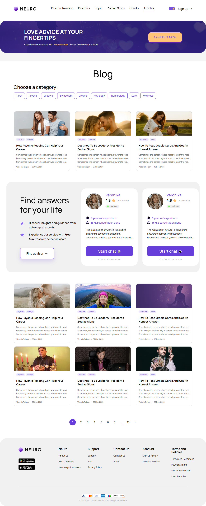
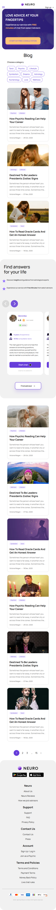

Блог
blog.html
Найти тематическую статью.
| Когда открывается | Меню / ссылки контента |
|---|---|
| Данные | Опубликованные статьи; рубрики; дата; язык; связанные эксперты. |
| Сценарий | Выбор карточки → статья; карусель меняет карточку; CTA эксперта сохраняет его идентификатор. |
| Переходы | Статья |
Общая и предметная логика. Снимки и подписи элементов — исходная редакция макета; поздние уточнения ТЗ имеют приоритет в своей области. Это не проверка текущего сайта.
Состояние 1280 · 1280 × 3139


Элементы и ожидаемые действия
| Элемент | Название в макете | Действие | Ожидаемый результат |
|---|---|---|---|
| E001 Виден | site-header__logo | Открыть адрес из исходника: home.html. | Сохранить авторизацию и переданный контекст. Backend-only маршрут связывает Игорь; открытие не выполняет денежное действие. |
| E002 Скрыт в этом состоянии | Open menu | Открыть/закрыть соответствующее меню или панель. | Доступные пункты зависят от роли; Escape/Close возвращают фокус. Открытие меню не выполняет его команды. |
| E003 Скрыт в этом состоянии | Language selector | Выбрать доступный язык интерфейса. | Сохранить текущий маршрут и сущность; язык не означает автоматический допуск страны или перевод чужой переписки. |
| E004 Скрыт в этом состоянии | site-header__logo | Открыть адрес из исходника: home.html. | Сохранить авторизацию и переданный контекст. Backend-only маршрут связывает Игорь; открытие не выполняет денежное действие. |
| E005 Скрыт в этом состоянии | Close menu | Закрыть локальное окно или вернуться к инициатору; Stay отменяет намерение завершить. | Вернуть фокус и исходный контекст. Не выполнять оплату, удаление или Complete. При неизвестном результате платежа сначала сверить заказ. |
| E006 Виден | Psychic Reading | Открыть адрес из исходника: psychic-reading.html. | Сохранить авторизацию и переданный контекст. Backend-only маршрут связывает Игорь; открытие не выполняет денежное действие. |
| E007 Виден | Psychics | Открыть адрес из исходника: all-psychic.html. | Сохранить авторизацию и переданный контекст. Backend-only маршрут связывает Игорь; открытие не выполняет денежное действие. |
| E008 Виден | Topic | Открыть адрес из исходника: index.html#integration-routes. | Сохранить авторизацию и переданный контекст. Backend-only маршрут связывает Игорь; открытие не выполняет денежное действие. |
| E009 Виден | Zodiac Signs | Открыть адрес из исходника: zodiac-compatibility.html. | Сохранить авторизацию и переданный контекст. Backend-only маршрут связывает Игорь; открытие не выполняет денежное действие. |
| E010 Виден | Charts | Открыть адрес из исходника: index.html#integration-routes. | Сохранить авторизацию и переданный контекст. Backend-only маршрут связывает Игорь; открытие не выполняет денежное действие. |
| E011 Виден | Articles | Открыть адрес из исходника: blog.html. | Сохранить авторизацию и переданный контекст. Backend-only маршрут связывает Игорь; открытие не выполняет денежное действие. |
| E012 Виден | Theme toggle | Изменить явно названный выбор формы. | Само изменение черновика не создает оплату или сохраненный объект; последующее подтверждение следует сценарию экрана. |
| E013 Виден | Sign up | Открыть адрес из исходника: signup-create.html. | Сохранить авторизацию и переданный контекст. Backend-only маршрут связывает Игорь; открытие не выполняет денежное действие. |
| E014 Виден | CONNECT NOW | Открыть адрес из исходника: signup-create.html. | Сохранить авторизацию и переданный контекст. Backend-only маршрут связывает Игорь; открытие не выполняет денежное действие. |
| E015 Виден | How Psychic Reading Can Help Your Career | Открыть адрес из исходника: blog-input.html. | Сохранить авторизацию и переданный контекст. Backend-only маршрут связывает Игорь; открытие не выполняет денежное действие. |
| E016 Виден | Find advisor | Открыть адрес из исходника: all-psychic.html. | Сохранить авторизацию и переданный контекст. Backend-only маршрут связывает Игорь; открытие не выполняет денежное действие. |
| E017 Скрыт в этом состоянии | Previous advisor | Показать предыдущий/следующий элемент соответствующей карусели. | Меняется только текущий элемент/позиция. Эксперт не считается выбранным автоматически. |
| E018 Скрыт в этом состоянии | Next advisor | Показать предыдущий/следующий элемент соответствующей карусели. | Меняется только текущий элемент/позиция. Эксперт не считается выбранным автоматически. |
| E019 Виден | Advisors, item 1 of 2 | Информационный блок/область фокуса, не самостоятельная команда. | Показывать актуальные данные соответствующего сценария; фокус или чтение не выполняют мутацию. |
| E020 Виден | Start chat | Продолжить сценарий «Блог»: Выбор карточки → статья; карусель меняет карточку; CTA эксперта сохраняет его идентификатор. | Сохраняются expertId/dialogId; вопрос, согласие, funding и operator Start не объединяются. Нажатие само не запускает платное время. |
| E021 Виден | Start chat | Продолжить сценарий «Блог»: Выбор карточки → статья; карусель меняет карточку; CTA эксперта сохраняет его идентификатор. | Сохраняются expertId/dialogId; вопрос, согласие, funding и operator Start не объединяются. Нажатие само не запускает платное время. |
| E022 Виден | 2 | Открыть адрес из исходника: blog.html. | Сохранить авторизацию и переданный контекст. Backend-only маршрут связывает Игорь; открытие не выполняет денежное действие. |
| E023 Виден | 3 | Открыть адрес из исходника: blog.html. | Сохранить авторизацию и переданный контекст. Backend-only маршрут связывает Игорь; открытие не выполняет денежное действие. |
| E024 Виден | 4 | Открыть адрес из исходника: blog.html. | Сохранить авторизацию и переданный контекст. Backend-only маршрут связывает Игорь; открытие не выполняет денежное действие. |
| E025 Виден | 5 | Открыть адрес из исходника: blog.html. | Сохранить авторизацию и переданный контекст. Backend-only маршрут связывает Игорь; открытие не выполняет денежное действие. |
| E026 Виден | 6 | Открыть адрес из исходника: blog.html. | Сохранить авторизацию и переданный контекст. Backend-only маршрут связывает Игорь; открытие не выполняет денежное действие. |
| E027 Виден | 7 | Открыть адрес из исходника: blog.html. | Сохранить авторизацию и переданный контекст. Backend-only маршрут связывает Игорь; открытие не выполняет денежное действие. |
| E028 Виден | 15 | Открыть адрес из исходника: blog.html. | Сохранить авторизацию и переданный контекст. Backend-only маршрут связывает Игорь; открытие не выполняет денежное действие. |
| E029 Виден | > | Открыть адрес из исходника: blog.html. | Сохранить авторизацию и переданный контекст. Backend-only маршрут связывает Игорь; открытие не выполняет денежное действие. |
| E030 Виден | site-footer__logo | Открыть адрес из исходника: home.html. | Сохранить авторизацию и переданный контекст. Backend-only маршрут связывает Игорь; открытие не выполняет денежное действие. |
| E031 Виден | site-footer__appstore-link | Открыть адрес из исходника: signup-create.html. | Сохранить авторизацию и переданный контекст. Backend-only маршрут связывает Игорь; открытие не выполняет денежное действие. |
| E032 Виден | site-footer__appstore-link | Открыть адрес из исходника: signup-create.html. | Сохранить авторизацию и переданный контекст. Backend-only маршрут связывает Игорь; открытие не выполняет денежное действие. |
| E033 Виден | About Us | Открыть адрес из исходника: index.html#integration-routes. | Сохранить авторизацию и переданный контекст. Backend-only маршрут связывает Игорь; открытие не выполняет денежное действие. |
| E034 Виден | Neuro Reviews | Открыть адрес из исходника: home.html#reviews. | Сохранить авторизацию и переданный контекст. Backend-only маршрут связывает Игорь; открытие не выполняет денежное действие. |
| E035 Виден | How we pick advisors | Открыть адрес из исходника: home.html#why-trust. | Сохранить авторизацию и переданный контекст. Backend-only маршрут связывает Игорь; открытие не выполняет денежное действие. |
| E036 Виден | Support | Открыть адрес из исходника: index.html#integration-routes. | Сохранить авторизацию и переданный контекст. Backend-only маршрут связывает Игорь; открытие не выполняет денежное действие. |
| E037 Виден | FAQ | Открыть адрес из исходника: faq.html. | Сохранить авторизацию и переданный контекст. Backend-only маршрут связывает Игорь; открытие не выполняет денежное действие. |
| E038 Виден | Privacy Policy | Открыть адрес из исходника: privacy-policy.html. | Сохранить авторизацию и переданный контекст. Backend-only маршрут связывает Игорь; открытие не выполняет денежное действие. |
| E039 Виден | Contact Us | Открыть адрес из исходника: index.html#integration-routes. | Сохранить авторизацию и переданный контекст. Backend-only маршрут связывает Игорь; открытие не выполняет денежное действие. |
| E040 Виден | Press | Открыть адрес из исходника: index.html#integration-routes. | Сохранить авторизацию и переданный контекст. Backend-only маршрут связывает Игорь; открытие не выполняет денежное действие. |
| E041 Виден | Sign Up / Log In | Открыть адрес из исходника: login.html. | Сохранить авторизацию и переданный контекст. Backend-only маршрут связывает Игорь; открытие не выполняет денежное действие. |
| E042 Виден | Join as a Psychic | Открыть адрес из исходника: index.html#integration-routes. | Сохранить авторизацию и переданный контекст. Backend-only маршрут связывает Игорь; открытие не выполняет денежное действие. |
| E043 Виден | Terms and Conditions | Открыть адрес из исходника: index.html#integration-routes. | Сохранить авторизацию и переданный контекст. Backend-only маршрут связывает Игорь; открытие не выполняет денежное действие. |
| E044 Виден | Payment Terms | Открыть адрес из исходника: index.html#integration-routes. | Сохранить авторизацию и переданный контекст. Backend-only маршрут связывает Игорь; открытие не выполняет денежное действие. |
| E045 Виден | Money Back Policy | Открыть адрес из исходника: index.html#integration-routes. | Сохранить авторизацию и переданный контекст. Backend-only маршрут связывает Игорь; открытие не выполняет денежное действие. |
| E046 Виден | Live chat rules | Открыть адрес из исходника: index.html#integration-routes. | Сохранить авторизацию и переданный контекст. Backend-only маршрут связывает Игорь; открытие не выполняет денежное действие. |
Состояние 390 · 390 × 6286


Элементы и ожидаемые действия
| Элемент | Название в макете | Действие | Ожидаемый результат |
|---|---|---|---|
| E001 Виден | site-header__logo | Открыть адрес из исходника: home.html. | Сохранить авторизацию и переданный контекст. Backend-only маршрут связывает Игорь; открытие не выполняет денежное действие. |
| E002 Виден | Open menu | Открыть/закрыть соответствующее меню или панель. | Доступные пункты зависят от роли; Escape/Close возвращают фокус. Открытие меню не выполняет его команды. |
| E003 Скрыт в этом состоянии | Language selector | Выбрать доступный язык интерфейса. | Сохранить текущий маршрут и сущность; язык не означает автоматический допуск страны или перевод чужой переписки. |
| E004 Скрыт в этом состоянии | site-header__logo | Открыть адрес из исходника: home.html. | Сохранить авторизацию и переданный контекст. Backend-only маршрут связывает Игорь; открытие не выполняет денежное действие. |
| E005 Скрыт в этом состоянии | Close menu | Закрыть локальное окно или вернуться к инициатору; Stay отменяет намерение завершить. | Вернуть фокус и исходный контекст. Не выполнять оплату, удаление или Complete. При неизвестном результате платежа сначала сверить заказ. |
| E006 Скрыт в этом состоянии | Psychic Reading | Открыть адрес из исходника: psychic-reading.html. | Сохранить авторизацию и переданный контекст. Backend-only маршрут связывает Игорь; открытие не выполняет денежное действие. |
| E007 Скрыт в этом состоянии | Psychics | Открыть адрес из исходника: all-psychic.html. | Сохранить авторизацию и переданный контекст. Backend-only маршрут связывает Игорь; открытие не выполняет денежное действие. |
| E008 Скрыт в этом состоянии | Topic | Открыть адрес из исходника: index.html#integration-routes. | Сохранить авторизацию и переданный контекст. Backend-only маршрут связывает Игорь; открытие не выполняет денежное действие. |
| E009 Скрыт в этом состоянии | Zodiac Signs | Открыть адрес из исходника: zodiac-compatibility.html. | Сохранить авторизацию и переданный контекст. Backend-only маршрут связывает Игорь; открытие не выполняет денежное действие. |
| E010 Скрыт в этом состоянии | Charts | Открыть адрес из исходника: index.html#integration-routes. | Сохранить авторизацию и переданный контекст. Backend-only маршрут связывает Игорь; открытие не выполняет денежное действие. |
| E011 Скрыт в этом состоянии | Articles | Открыть адрес из исходника: blog.html. | Сохранить авторизацию и переданный контекст. Backend-only маршрут связывает Игорь; открытие не выполняет денежное действие. |
| E012 Скрыт в этом состоянии | Theme toggle | Изменить явно названный выбор формы. | Само изменение черновика не создает оплату или сохраненный объект; последующее подтверждение следует сценарию экрана. |
| E013 Виден | Sign up | Открыть адрес из исходника: signup-create.html. | Сохранить авторизацию и переданный контекст. Backend-only маршрут связывает Игорь; открытие не выполняет денежное действие. |
| E014 Виден | START MY FREE CONSULTATION | Открыть вопрос/постоянный диалог с явно выбранным экспертом; при необходимости сначала вход. | Бесплатный диалог и welcome bonus различаются; нет платного Start от одного нажатия. |
| E015 Виден | How Psychic Reading Can Help Your Career | Открыть адрес из исходника: blog-input.html. | Сохранить авторизацию и переданный контекст. Backend-only маршрут связывает Игорь; открытие не выполняет денежное действие. |
| E016 Виден | Find advisor | Открыть адрес из исходника: all-psychic.html. | Сохранить авторизацию и переданный контекст. Backend-only маршрут связывает Игорь; открытие не выполняет денежное действие. |
| E017 Виден | Previous advisor | Показать предыдущий/следующий элемент соответствующей карусели. | Меняется только текущий элемент/позиция. Эксперт не считается выбранным автоматически. |
| E018 Виден | Next advisor | Показать предыдущий/следующий элемент соответствующей карусели. | Меняется только текущий элемент/позиция. Эксперт не считается выбранным автоматически. |
| E019 Виден | Advisors, item 1 of 2 | Информационный блок/область фокуса, не самостоятельная команда. | Показывать актуальные данные соответствующего сценария; фокус или чтение не выполняют мутацию. |
| E020 Виден | Start chat | Продолжить сценарий «Блог»: Выбор карточки → статья; карусель меняет карточку; CTA эксперта сохраняет его идентификатор. | Сохраняются expertId/dialogId; вопрос, согласие, funding и operator Start не объединяются. Нажатие само не запускает платное время. |
| E021 Виден | Start chat | Продолжить сценарий «Блог»: Выбор карточки → статья; карусель меняет карточку; CTA эксперта сохраняет его идентификатор. | Сохраняются expertId/dialogId; вопрос, согласие, funding и operator Start не объединяются. Нажатие само не запускает платное время. |
| E022 Виден | 2 | Открыть адрес из исходника: blog.html. | Сохранить авторизацию и переданный контекст. Backend-only маршрут связывает Игорь; открытие не выполняет денежное действие. |
| E023 Виден | 3 | Открыть адрес из исходника: blog.html. | Сохранить авторизацию и переданный контекст. Backend-only маршрут связывает Игорь; открытие не выполняет денежное действие. |
| E024 Скрыт в этом состоянии | 4 | Открыть адрес из исходника: blog.html. | Сохранить авторизацию и переданный контекст. Backend-only маршрут связывает Игорь; открытие не выполняет денежное действие. |
| E025 Скрыт в этом состоянии | 5 | Открыть адрес из исходника: blog.html. | Сохранить авторизацию и переданный контекст. Backend-only маршрут связывает Игорь; открытие не выполняет денежное действие. |
| E026 Скрыт в этом состоянии | 6 | Открыть адрес из исходника: blog.html. | Сохранить авторизацию и переданный контекст. Backend-only маршрут связывает Игорь; открытие не выполняет денежное действие. |
| E027 Скрыт в этом состоянии | 7 | Открыть адрес из исходника: blog.html. | Сохранить авторизацию и переданный контекст. Backend-only маршрут связывает Игорь; открытие не выполняет денежное действие. |
| E028 Виден | 15 | Открыть адрес из исходника: blog.html. | Сохранить авторизацию и переданный контекст. Backend-only маршрут связывает Игорь; открытие не выполняет денежное действие. |
| E029 Виден | > | Открыть адрес из исходника: blog.html. | Сохранить авторизацию и переданный контекст. Backend-only маршрут связывает Игорь; открытие не выполняет денежное действие. |
| E030 Виден | site-footer__logo | Открыть адрес из исходника: home.html. | Сохранить авторизацию и переданный контекст. Backend-only маршрут связывает Игорь; открытие не выполняет денежное действие. |
| E031 Виден | site-footer__appstore-link | Открыть адрес из исходника: signup-create.html. | Сохранить авторизацию и переданный контекст. Backend-only маршрут связывает Игорь; открытие не выполняет денежное действие. |
| E032 Виден | site-footer__appstore-link | Открыть адрес из исходника: signup-create.html. | Сохранить авторизацию и переданный контекст. Backend-only маршрут связывает Игорь; открытие не выполняет денежное действие. |
| E033 Виден | About Us | Открыть адрес из исходника: index.html#integration-routes. | Сохранить авторизацию и переданный контекст. Backend-only маршрут связывает Игорь; открытие не выполняет денежное действие. |
| E034 Виден | Neuro Reviews | Открыть адрес из исходника: home.html#reviews. | Сохранить авторизацию и переданный контекст. Backend-only маршрут связывает Игорь; открытие не выполняет денежное действие. |
| E035 Виден | How we pick advisors | Открыть адрес из исходника: home.html#why-trust. | Сохранить авторизацию и переданный контекст. Backend-only маршрут связывает Игорь; открытие не выполняет денежное действие. |
| E036 Виден | Support | Открыть адрес из исходника: index.html#integration-routes. | Сохранить авторизацию и переданный контекст. Backend-only маршрут связывает Игорь; открытие не выполняет денежное действие. |
| E037 Виден | FAQ | Открыть адрес из исходника: faq.html. | Сохранить авторизацию и переданный контекст. Backend-only маршрут связывает Игорь; открытие не выполняет денежное действие. |
| E038 Виден | Privacy Policy | Открыть адрес из исходника: privacy-policy.html. | Сохранить авторизацию и переданный контекст. Backend-only маршрут связывает Игорь; открытие не выполняет денежное действие. |
| E039 Виден | Contact Us | Открыть адрес из исходника: index.html#integration-routes. | Сохранить авторизацию и переданный контекст. Backend-only маршрут связывает Игорь; открытие не выполняет денежное действие. |
| E040 Виден | Press | Открыть адрес из исходника: index.html#integration-routes. | Сохранить авторизацию и переданный контекст. Backend-only маршрут связывает Игорь; открытие не выполняет денежное действие. |
| E041 Виден | Sign Up / Log In | Открыть адрес из исходника: login.html. | Сохранить авторизацию и переданный контекст. Backend-only маршрут связывает Игорь; открытие не выполняет денежное действие. |
| E042 Виден | Join as a Psychic | Открыть адрес из исходника: index.html#integration-routes. | Сохранить авторизацию и переданный контекст. Backend-only маршрут связывает Игорь; открытие не выполняет денежное действие. |
| E043 Виден | Terms and Conditions | Открыть адрес из исходника: index.html#integration-routes. | Сохранить авторизацию и переданный контекст. Backend-only маршрут связывает Игорь; открытие не выполняет денежное действие. |
| E044 Виден | Payment Terms | Открыть адрес из исходника: index.html#integration-routes. | Сохранить авторизацию и переданный контекст. Backend-only маршрут связывает Игорь; открытие не выполняет денежное действие. |
| E045 Виден | Money Back Policy | Открыть адрес из исходника: index.html#integration-routes. | Сохранить авторизацию и переданный контекст. Backend-only маршрут связывает Игорь; открытие не выполняет денежное действие. |
| E046 Виден | Live chat rules | Открыть адрес из исходника: index.html#integration-routes. | Сохранить авторизацию и переданный контекст. Backend-only маршрут связывает Игорь; открытие не выполняет денежное действие. |